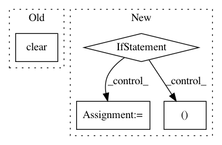

aac7b54c8d6957786a9aa70e896cef10fe0ab9fe,doc/examples/tracking_pft.py,,,#,39
Before Change
streamlines = Streamlines(pft_streamline_generator)
save_trk("pft_streamline.trk", streamlines, affine, shape)
renderer.clear()
renderer.add(actor.line(streamlines, cmap.line_colors(streamlines)))
window.record(renderer, out_path="pft_streamlines.png", size=(600, 600))
After Change
streamlines = Streamlines(prob_streamline_generator)
save_trk("tractogram_probabilistic_cmc.trk", streamlines, affine, shape)
if have_fury:
r = window.Renderer()
r.add(actor.line(streamlines, colormap.line_colors(streamlines)))
window.record(r, out_path="tractogram_probabilistic_cmc.png",
size=(800, 800))
if interactive:
window.show(r)
.. figure:: tractogram_probabilistic_cmc.png
:align: center
In pattern: SUPERPATTERN
Frequency: 3
Non-data size: 4
Instances
Project Name: nipy/dipy
Commit Name: aac7b54c8d6957786a9aa70e896cef10fe0ab9fe
Time: 2019-07-21
Author: girard.gabriel@gmail.com
File Name: doc/examples/tracking_pft.py
Class Name:
Method Name:
Project Name: nipy/dipy
Commit Name: c2cfaf314a381e520883eba2d965cd93fd5572e0
Time: 2019-07-21
Author: girard.gabriel@gmail.com
File Name: doc/examples/tracking_bootstrap_peaks.py
Class Name:
Method Name:
Project Name: MorvanZhou/Reinforcement-learning-with-tensorflow
Commit Name: 11a884b264b7f511c3dcfe4f19dbbca0842da7ee
Time: 2017-08-13
Author: morvanzhou@gmail.com
File Name: contents/12_Proximal_Policy_Optimization/DPPO.py
Class Name: Worker
Method Name: work